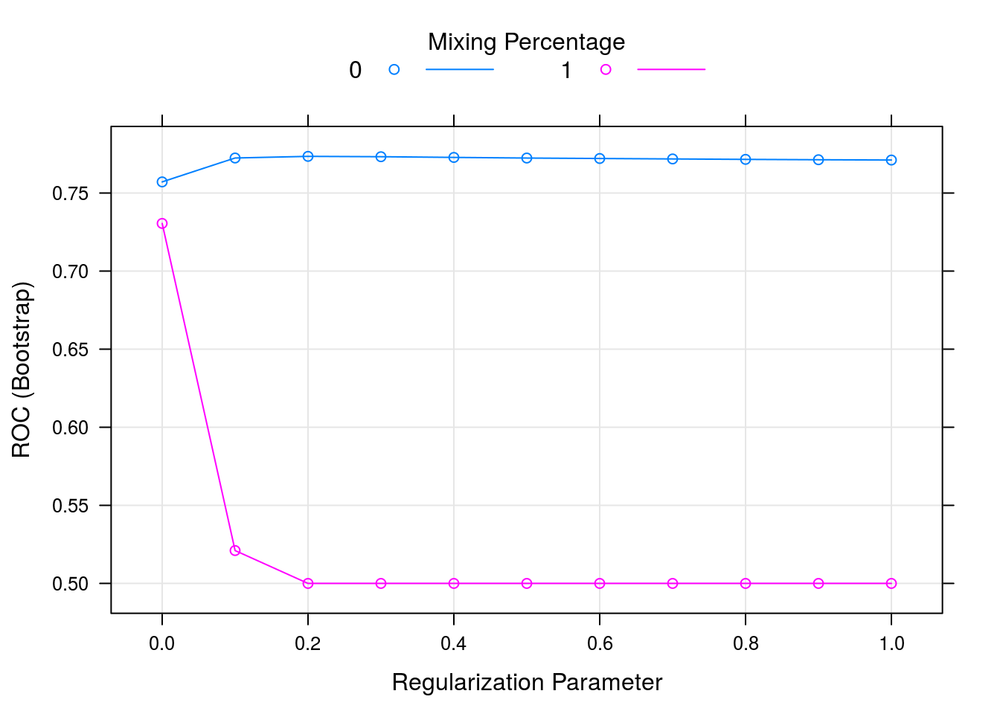

Chapter 5 Supervised Learning
5.1 Introduction
In supervised learning (SML), the learning algorithm is presented with labelled example inputs, where the labels indicate the desired output. SML itself is composed of classification, where the output is qualitative, and regression, where the output is quantitative.
When two sets of labels, or classes, are available, one speaks of binary classification. A classical example thereof is labelling an email as spam or not spam. When more classes are to be learnt, one speaks of a multi-class problem, such as annotation a new Iris example as being from the setosa, versicolor or virginica species. In these cases, the output is a single label (of one of the anticipated classes). If multiple labels may be assigned to each examples, one speaks of multi-label classification.
5.2 Preview
To start this chapter, let’s use a simple, but useful classification algorithm, K nearest neighbours (kNN) to classify the iris flowers. We will use the knn function from the class package.
K nearest neighbours works by directly measuring the (euclidean) distance between observations and infer the class of unlabelled data from the class of its nearest neighbours. In the figure below, the unlabelled instances 1 and 2 will be assigned classes c1 (blue) and c2 (red) as their closest neighbours are red and blue, respectively.

Figure 5.1: Schematic illustrating the k nearest neighbors algorithm.
Typically in machine learning, there are two clear steps, where one first trains a model and then uses the model to predict new outputs (class labels in this case). In the kNN, these two steps are combined into a single function call to knn.
Lets draw a set of 50 random iris observations to train the model and predict the species of another set of 50 randomly chosen flowers. The knn function takes the training data, the new data (to be inferred) and the labels of the training data, and returns (by default) the predicted class.
set.seed(12L)
tr <- sample(150, 50)
nw <- sample(150, 50)
library("class")
knnres <- knn(iris[tr, -5], iris[nw, -5], iris$Species[tr])
head(knnres)## [1] versicolor versicolor versicolor setosa versicolor virginica
## Levels: setosa versicolor virginicaWe can now compare the observed kNN-predicted class and the expected known outcome and calculate the overall accuracy of our model.
table(knnres, iris$Species[nw])##
## knnres setosa versicolor virginica
## setosa 18 0 0
## versicolor 0 18 1
## virginica 0 1 12mean(knnres == iris$Species[nw])## [1] 0.96We have omitted and important argument from knn, which is the parameter k of the classifier. This value k defines how many nearest neighbours will be considered to assign a class to a new unlabelled observation. From the arguments of the function,
args(knn)## function (train, test, cl, k = 1, l = 0, prob = FALSE, use.all = TRUE)
## NULLwe see that the default value is 1. But is this a good value? Wouldn’t we prefer to look at more neighbours and infer the new class using a vote based on more labels?
Challenge
Repeat the kNN classification above by using another value of k, and compare the accuracy of this new model to the one above. Make sure to use the same
trandnwtraining and new data to avoid any biases in the comparison.
knnres5 <- knn(iris[tr, -5], iris[nw, -5], iris$Species[tr], k = 5)
mean(knnres5 == iris$Species[nw])## [1] 0.94table(knnres5, knnres)## knnres
## knnres5 setosa versicolor virginica
## setosa 18 0 0
## versicolor 0 18 0
## virginica 0 1 13Challenge
Rerun the kNN classifier with a value of k > 1, and specify
prob = TRUEto obtain the proportion of the votes for the winning class.
knnres5prob <- knn(iris[tr, -5], iris[nw, -5], iris$Species[tr], k = 5, prob = TRUE)
table(attr(knnres5prob, "prob"))##
## 0.6 0.8 1
## 4 1 45This introductory example leads to two important and related questions that we need to consider:
How can we do a good job in training and testing data? In the example above, we choose random training and new data.
How can we estimate our model parameters (k in the example above) so as to obtain good classification accuracy?
5.3 Model performance
5.3.1 In-sample and out-of-sample error
In supervised machine learning, we have a desired output and thus know precisely what is to be computed. It thus becomes possible to directly evaluate a model using a quantifiable and object metric. For regression, we will use the root mean squared error (RMSE), which is what linear regression (lm in R) seeks to minimise. For classification, we will use model prediction accuracy.
Typically, we won’t want to calculate any of these metrics using observations that were also used to calculate the model. This approach, called in-sample error lead to optimistic assessment of our model. Indeed, the model has already seen these data upon construction, and is does considered optimised the these observations in particular; it is said to over-fit the data. We prefer to calculate an out-of-sample error, on new data, to gain a better idea of how to model performs on unseen data, and estimate how well the model generalises.
In this course, we will focus on the caret package for Classification And REgression Training (see also https://topepo.github.io/caret/index.html). It provides a common and consistent interface to many, often repetitive, tasks in supervised learning.
library("caret")The code chunk below uses the lm function to model the price of round cut diamonds and then predicts the price of these very same diamonds with the predict function.
data(diamonds)
model <- lm(price ~ ., diamonds)
p <- predict(model, diamonds)Challenge
Calculate the root mean squares error for the prediction above
## Error on prediction
error <- p - diamonds$price
rmse_in <- sqrt(mean(error^2)) ## in-sample RMSE
rmse_in## [1] 1129.843Let’s now repeat the exercise above, but by calculating the out-of-sample RMSE. We are prepare a 80/20 split of the data and use 80% to fit our model predict the target variable (this is called the training data), the price, on the 20% unseen data (the testing data).
Challenge
- Let’s create a random 80/20 split to define the test and train subsets.
- Train a regression model on the training data.
- Test the model on the testing data.
- Calculating the out-of-sample RMSE.
set.seed(42)
ntest <- nrow(diamonds) * 0.80
test <- sample(nrow(diamonds), ntest)
model <- lm(price ~ ., data = diamonds[test, ])
p <- predict(model, diamonds[-test, ])
error <- p - diamonds$price[-test]
rmse_out <- sqrt(mean(error^2)) ## out-of-sample RMSE
rmse_out## [1] 1136.596The values for the out-of-sample RMSE will vary depending on the what exact split was used. The diamonds is a rather extensive data, and thus even when building out model using a subset of the available data (80% above), we manage to generate a model with a low RMSE, and possibly lower than the in-sample error.
When dealing with datasets of smaller sizes, however, the presence of a single outlier in the train and test data split can substantially influence the model and the RMSE. We can’t rely on such an approach an need a more robust one, where, we can generate and use multiple, different train/test sets to sample a set of RMSEs, leading to a better estimate of the out-of-sample RMSE.
5.3.2 Cross-validation
Instead of doing a single training/testing split, we can systematise this process, produce multiple, different out-of-sample train/test splits, that will lead to a better estimate of the out-of-sample RMSE.
The figure below illustrates the cross validation procedure, creating 3 folds. One would typically do a 10-fold cross validation (if the size of the data permits it). We split the data into 3 random and complementary folds, so that each data point appears exactly once in each fold. This leads to a total test set size that is identical to the size as the full dataset but is composed of out-of-sample predictions.

Schematic of 3-fold cross validation producing three training (blue) and testing (white) splits.
After cross-validation, all models used within each fold are discarded, and a new model is build using the whole dataset, with the best model parameter(s), i.e those that generalised over all folds.
This makes cross-validation quite time consuming, as it takes x+1 (where x in the number of cross-validation folds) times as long as fitting a single model, but is essential.
Note that it is important to maintain the class proportions within the different folds, i.e. respect the proportion of the different classes in the original data. This is also taken care when using the caret package.
The procedure of creating folds and training the models is handled by the train function in caret. Below, we apply it to the diamond price example that we used when introducing the model performance.
- We start by setting a random to be able to reproduce the example.
- We specify the method (the learning algorithm) we want to use. Here, we use
"lm", but, as we will see later, there are many others to choose from1. - We then set the out-of-sample training procedure to 10-fold cross validation (
method = "cv"andnumber = 10). To simplify the output in the material for better readability, we set the verbosity flag toFALSE, but it is useful to set it toTRUEin interactive mode.
set.seed(42)
model <- train(price ~ ., diamonds,
method = "lm",
trControl = trainControl(method = "cv",
number = 10,
verboseIter = FALSE))
model## Linear Regression
##
## 53940 samples
## 9 predictors
##
## No pre-processing
## Resampling: Cross-Validated (10 fold)
## Summary of sample sizes: 48545, 48547, 48546, 48546, 48545, 48546, ...
## Resampling results:
##
## RMSE Rsquared MAE
## 1131.504 0.9195556 740.6424
##
## Tuning parameter 'intercept' was held constant at a value of TRUEOnce we have trained our model, we can directly use this train object as input to the predict method:
p <- predict(model, diamonds)
error <- p - diamonds$price
rmse_xval <- sqrt(mean(error^2)) ## xval RMSE
rmse_xval## [1] 1129.843Challenge
Train a linear model using 10-fold cross-validation and then use it to predict the median value of owner-occupied homes in Boston from the
Bostondataset as described above. Then calculate the RMSE.
library("MASS")
data(Boston)
model <- train(medv ~ .,
Boston,
method = "lm",
trControl = trainControl(method = "cv",
number = 10))
model## Linear Regression
##
## 506 samples
## 13 predictors
##
## No pre-processing
## Resampling: Cross-Validated (10 fold)
## Summary of sample sizes: 455, 456, 454, 454, 455, 454, ...
## Resampling results:
##
## RMSE Rsquared MAE
## 4.770438 0.7379312 3.38097
##
## Tuning parameter 'intercept' was held constant at a value of TRUEp <- predict(model, Boston)
sqrt(mean(p - Boston$medv)^2)## [1] 5.851927e-145.4 Classification performance
Above, we have used the RMSE to assess the performance of our regression model. When using a classification algorithm, we want to assess its accuracy to do so.
5.4.1 Confusion matrix
Instead of calculating an error between predicted value and known value, in classification we will directly compare of the predicted class matches the known label. To do so, rather than calculating the mean accuracy as we did above, in the introductory kNN example, we can calculate a confusion matrix.
A confusion matrix to contrast predictions to actual results. Correct results are true positives (TP) and true negatives that are found along the diagonal. All other cells indicate false results, i.e false negatives (FN) and false positives (FP).
| Reference Yes | Reference No | |
|---|---|---|
| Predicted Yes | TP | FP |
| Predicted No | FN | TN |
The values that populate this table will depend on a the cutoff that we set to define whether the classifier should predict Yes or No. Intuitively, we might want to use 0.5 as a threshold, and assign every result with a probability > 0.5 to Yes and No otherwise.
Let’s experiment with this using the Sonar dataset, and see if we can differentiate mines from rocks using a logistic classification model use the glm function from the stats package.
library("mlbench")
data(Sonar)
## 60/40 split
tr <- sample(nrow(Sonar), round(nrow(Sonar) * 0.6))
train <- Sonar[tr, ]
test <- Sonar[-tr, ]model <- glm(Class ~ ., data = train, family = "binomial")
p <- predict(model, test, type = "response")
summary(p)## Min. 1st Qu. Median Mean 3rd Qu. Max.
## 0.0000 0.0000 0.7265 0.5079 1.0000 1.0000cl <- ifelse(p > 0.5, "M", "R")
table(cl, test$Class)##
## cl M R
## M 16 26
## R 29 12The caret package offers it’s own, more informative function to calculate a confusion matrix:
confusionMatrix(cl, test$Class)## Confusion Matrix and Statistics
##
## Reference
## Prediction M R
## M 16 26
## R 29 12
##
## Accuracy : 0.3373
## 95% CI : (0.2372, 0.4495)
## No Information Rate : 0.5422
## P-Value [Acc > NIR] : 0.9999
##
## Kappa : -0.3266
## Mcnemar's Test P-Value : 0.7874
##
## Sensitivity : 0.3556
## Specificity : 0.3158
## Pos Pred Value : 0.3810
## Neg Pred Value : 0.2927
## Prevalence : 0.5422
## Detection Rate : 0.1928
## Detection Prevalence : 0.5060
## Balanced Accuracy : 0.3357
##
## 'Positive' Class : M
## We get, among others
- the accuracy: \(\frac{TP + TN}{TP + TN + FP + FN}\)
- the sensitivity (recall, TP rate): \(\frac{TP}{TP + FN}\)
- the specificity: \(\frac{TN}{TN + FP}\)
- positive predictive value (precision): \(\frac{TP}{TP + FP}\)
- negative predictive value: \(\frac{TN}{TN + FN}\)
- FP rate (fall-out): \(\frac{FP}{FP + TN}\)
Challenge
Compare the model accuracy (or any other metric) using thresholds of 0.1 and 0.9.
confusionMatrix(ifelse(p > 0.9, "M", "R"), test$Class)## Confusion Matrix and Statistics
##
## Reference
## Prediction M R
## M 16 25
## R 29 13
##
## Accuracy : 0.3494
## 95% CI : (0.248, 0.4619)
## No Information Rate : 0.5422
## P-Value [Acc > NIR] : 0.9999
##
## Kappa : -0.2999
## Mcnemar's Test P-Value : 0.6831
##
## Sensitivity : 0.3556
## Specificity : 0.3421
## Pos Pred Value : 0.3902
## Neg Pred Value : 0.3095
## Prevalence : 0.5422
## Detection Rate : 0.1928
## Detection Prevalence : 0.4940
## Balanced Accuracy : 0.3488
##
## 'Positive' Class : M
## confusionMatrix(ifelse(p > 0.1, "M", "R"), test$Class)## Confusion Matrix and Statistics
##
## Reference
## Prediction M R
## M 16 28
## R 29 10
##
## Accuracy : 0.3133
## 95% CI : (0.2159, 0.4244)
## No Information Rate : 0.5422
## P-Value [Acc > NIR] : 1
##
## Kappa : -0.3805
## Mcnemar's Test P-Value : 1
##
## Sensitivity : 0.3556
## Specificity : 0.2632
## Pos Pred Value : 0.3636
## Neg Pred Value : 0.2564
## Prevalence : 0.5422
## Detection Rate : 0.1928
## Detection Prevalence : 0.5301
## Balanced Accuracy : 0.3094
##
## 'Positive' Class : M
## 5.4.2 Receiver operating characteristic (ROC) curve
There is no reason to use 0.5 as a threshold. One could use a low threshold to catch more mines with less certainty or or higher threshold to catch fewer mines with more certainty.
This illustrates the need to adequately balance TP and FP rates. We need to have a way to do a cost-benefit analysis, and the solution will often depend on the question/problem.
One solution would be to try with different classification thresholds. Instead of inspecting numerous confusion matrices, it is possible to automate the calculation of the TP and FP rates at each threshold and visualise all results along a ROC curve.
This can be done with the colAUC function from the caTools package:
caTools::colAUC(p, test[["Class"]], plotROC = TRUE)
## [,1]
## M vs. R 0.6909357- x: FP rate (1 - specificity)
- y: TP rate (sensitivity)
- each point along the curve represents a confusion matrix for a given threshold
In addition, the colAUC function returns the area under the curve (AUC) model accuracy metric. This is single number metric, summarising the model performance along all possible thresholds:
- an AUC of 0.5 corresponds to a random model
- values > 0.5 do better than a random guess
- a value 1 represents a perfect model
- a value 1 represents a model that is always wrong
5.4.3 AUC in caret
When using caret’s trainControl function to train a model, we can set it so that it computes the ROC and AUC properties for us.
## Create trainControl object: myControl
myControl <- trainControl(
method = "cv", ## cross validation
number = 10, ## 10-fold
summaryFunction = twoClassSummary, ## NEW
classProbs = TRUE, # IMPORTANT
verboseIter = FALSE
)
## Train glm with custom trainControl: model
model <- train(Class ~ ., Sonar,
method = "glm", ## to use glm's logistic regression
trControl = myControl)
## Print model to console
print(model)## Generalized Linear Model
##
## 208 samples
## 60 predictors
## 2 classes: 'M', 'R'
##
## No pre-processing
## Resampling: Cross-Validated (10 fold)
## Summary of sample sizes: 187, 187, 187, 187, 188, 188, ...
## Resampling results:
##
## ROC Sens Spec
## 0.7134091 0.7462121 0.67Challenge
Define a
trainobject that uses the AUC and 10-fold cross validation to classify the Sonar data using a logistic regression, as demonstrated above.
5.5 Random forest
Random forest models are accurate and non-linear models and robust to over-fitting and hence quite popular. They however require hyperparameters to be tuned manually, like the value k in the example above.
Building random forest starts by generating a high number of individual decision trees. A single decision tree isn’t very accurate, but many different trees built using different inputs (with bootstrapped inputs, features and observations) enable to explore a broad search space and, once combined, produce accurate models, a technique called bootstrap aggregation or bagging.
5.5.1 Decision trees
A great advantage of decision trees is that they make a complex decision simpler by breaking it down into smaller, simpler decisions using divide-and-conquer strategy. They basically identify a set of if-else conditions that split data according to the value if the features.
library("rpart") ## recursive partitioning
m <- rpart(Class ~ ., data = Sonar,
method = "class")
library("rpart.plot")
rpart.plot(m)
Figure 5.2: Descision tree with its if-else conditions
p <- predict(m, Sonar, type = "class")
table(p, Sonar$Class)##
## p M R
## M 95 10
## R 16 87Decision trees choose splits based on most homogeneous partitions, and lead to smaller and more homogeneous partitions over their iterations.
An issue with single decision trees is that they can grow, and become large and complex with many branches, with corresponds to over-fitting. Over-fitting models noise, rather than general patterns in the data, focusing on subtle patterns (outliers) that won’t generalise.
To avoid over-fitting, individual decision trees are pruned. Pruning can happen as a pre-condition when growing the tree, or afterwards, by pruning a large tree.
Pre-pruning: stop growing process, i.e stops divide-and-conquer after a certain number of iterations (grows tree at certain predefined level), or requires a minimum number of observations in each mode to allow splitting.
Post-pruning: grow a large and complex tree, and reduce its size; nodes and branches that have a negligible effect on the classification accuracy are removed.
5.5.2 Training a random forest
Let’s return to random forests and train a model using the train infrastructure from caret:
set.seed(12)
model <- train(Class ~ .,
data = Sonar,
method = "ranger")
print(model)## Random Forest
##
## 208 samples
## 60 predictors
## 2 classes: 'M', 'R'
##
## No pre-processing
## Resampling: Bootstrapped (25 reps)
## Summary of sample sizes: 208, 208, 208, 208, 208, 208, ...
## Resampling results across tuning parameters:
##
## mtry splitrule Accuracy Kappa
## 2 gini 0.8221049 0.6417590
## 2 extratrees 0.8346434 0.6669013
## 31 gini 0.7884549 0.5747543
## 31 extratrees 0.8396622 0.6774340
## 60 gini 0.7776562 0.5524942
## 60 extratrees 0.8359736 0.6694219
##
## Accuracy was used to select the optimal model using the largest value.
## The final values used for the model were mtry = 31 and splitrule
## = extratrees.plot(model)
The main hyperparameters is mtry, i.e. the number of randomly selected variables used at each split. 2 variables produce random models, while 100s of variables tend to be less random, but risk over-fitting. caret automate the tuning of the hyperparameter using a grid search, which can be parametrised by setting tuneLength (that sets the number of hyperparameter values to test) or directly defining the tuneGrid (the hyperparameter values), which requires knowledge of the model.
model <- train(Class ~ .,
data = Sonar,
method = "ranger",
tuneLength = 5)set.seed(42)
myGrid <- expand.grid(mtry = c(5, 10, 20, 40, 60),
splitrule = c("gini", "extratrees"))
model <- train(Class ~ .,
data = Sonar,
method = "ranger",
tuneGrid = myGrid,
trControl = trainControl(method = "cv",
number = 5,
verboseIter = FALSE))
print(model)## Random Forest
##
## 208 samples
## 60 predictors
## 2 classes: 'M', 'R'
##
## No pre-processing
## Resampling: Cross-Validated (5 fold)
## Summary of sample sizes: 167, 167, 167, 166, 165
## Resampling results across tuning parameters:
##
## mtry splitrule Accuracy Kappa
## 5 gini 0.8228209 0.6388558
## 5 extratrees 0.8415417 0.6764071
## 10 gini 0.8175999 0.6291739
## 10 extratrees 0.8512924 0.6968188
## 20 gini 0.8030819 0.5994688
## 20 extratrees 0.8509548 0.6969166
## 40 gini 0.7838020 0.5612192
## 40 extratrees 0.8414256 0.6782512
## 60 gini 0.7692840 0.5310516
## 60 extratrees 0.8460768 0.6880922
##
## Accuracy was used to select the optimal model using the largest value.
## The final values used for the model were mtry = 10 and splitrule
## = extratrees.plot(model)
Challenge
Experiment with training a random forest model as described above, by using 5-fold cross validation, and setting a
tuneLengthof 5.
set.seed(42)
model <- train(Class ~ .,
data = Sonar,
method = "ranger",
tuneLength = 5,
trControl = trainControl(method = "cv",
number = 5,
verboseIter = FALSE))
plot(model)
5.6 Data pre-processing
5.6.1 Missing values
Real datasets often come with missing values. In R, these should be encoded using NA. There are basically two approaches to deal with such cases.
Drop the observations with missing values, or, if one feature contains a very high proportion of NAs, drop the feature altogether. These approaches are only applicable when the proportion of missing values is relatively small. Otherwise, it could lead to loosing too much data.
Impute missing values.
Data imputation can however have critical consequences depending on the proportion of missing values and their nature. From a statistical point of view, missing values are classified as missing completely at random (MCAR), missing at random (MAR) or missing not at random (MNAR), and the type of the missing values will influence the efficiency of the imputation method.
The figure below shows how different imputation methods perform depending on the proportion and nature of missing values (from Lazar et al., on quantitative proteomics data).

Normalised RMSE (RMSE-observation standard deviation ration) describing the effect of different imputation methods depending on the nature and proportion of the missing values: kNN (a), SVDimpute (b), MLE (c), MinDet (d), and MinProb (e).
Let’s start by simulating a dataset containing missing values using the mtcars dataset. Below, we will want to predict the mpg variable using cyl, disp, and hp, with the latter containing 10 missing values.
data(mtcars)
mtcars[sample(nrow(mtcars), 10), "hp"] <- NA
Y <- mtcars$mpg ## target variable
X <- mtcars[, 2:4] ## predictorsIf we now wanted to train a model (using the non-formula interface):
try(train(X, Y))## note: only 2 unique complexity parameters in default grid. Truncating the grid to 2 .
##
## Something is wrong; all the RMSE metric values are missing:
## RMSE Rsquared MAE
## Min. : NA Min. : NA Min. : NA
## 1st Qu.: NA 1st Qu.: NA 1st Qu.: NA
## Median : NA Median : NA Median : NA
## Mean :NaN Mean :NaN Mean :NaN
## 3rd Qu.: NA 3rd Qu.: NA 3rd Qu.: NA
## Max. : NA Max. : NA Max. : NA
## NA's :2 NA's :2 NA's :2(Note that the occurrence of the error will depend on the model chosen.)
We could perform imputation manually, but caret provides a whole range of pre-processing methods, including imputation methods, that can directly be passed when training the model.
5.6.2 Median imputation
Imputation using median of features. This methods works well if the data are missing at random.
train(X, Y, preProcess = "medianImpute")## note: only 2 unique complexity parameters in default grid. Truncating the grid to 2 .## Random Forest
##
## 32 samples
## 3 predictors
##
## Pre-processing: median imputation (3)
## Resampling: Bootstrapped (25 reps)
## Summary of sample sizes: 32, 32, 32, 32, 32, 32, ...
## Resampling results across tuning parameters:
##
## mtry RMSE Rsquared MAE
## 2 2.882856 0.808562 2.389234
## 3 2.888400 0.806260 2.373986
##
## RMSE was used to select the optimal model using the smallest value.
## The final value used for the model was mtry = 2.Imputing using caret also allows to optimise the imputation based on the cross validation splits, as train will do median imputation inside each fold.
5.6.3 KNN imputation
If there is a systematic bias in the missing values, then median imputation is known to produce incorrect results. kNN imputation will impute missing values using on other, similar non-missing rows. The default value is 5.
train(X, Y, preProcess = "knnImpute")## note: only 2 unique complexity parameters in default grid. Truncating the grid to 2 .## Random Forest
##
## 32 samples
## 3 predictors
##
## Pre-processing: nearest neighbor imputation (3), centered (3), scaled (3)
## Resampling: Bootstrapped (25 reps)
## Summary of sample sizes: 32, 32, 32, 32, 32, 32, ...
## Resampling results across tuning parameters:
##
## mtry RMSE Rsquared MAE
## 2 2.868534 0.7995565 2.309105
## 3 2.871339 0.7907874 2.276478
##
## RMSE was used to select the optimal model using the smallest value.
## The final value used for the model was mtry = 2.5.7 Scaling and scaling
We have seen in the Unsupervised learning chapter how data at different scales can substantially disrupt a learning algorithm. Scaling (division by the standard deviation) and centring (subtraction of the mean) can also be applied directly during model training by setting. Note that they are set to be applied by default prior to training.
train(X, Y, preProcess = "scale")
train(X, Y, preProcess = "center")As we have discussed in the section about Principal component analysis, PCA can be used as pre-processing method, generating a set of high-variance and perpendicular predictors, preventing collinearity.
train(X, Y, preProcess = "pca")5.7.1 Multiple pre-processing methods
It is possible to chain multiple processing methods: imputation, center, scale, pca.
train(X, Y, preProcess = c("knnImpute", "center", "scale", "pca"))## note: only 2 unique complexity parameters in default grid. Truncating the grid to 2 .## Random Forest
##
## 32 samples
## 3 predictors
##
## Pre-processing: nearest neighbor imputation (3), centered (3), scaled
## (3), principal component signal extraction (3)
## Resampling: Bootstrapped (25 reps)
## Summary of sample sizes: 32, 32, 32, 32, 32, 32, ...
## Resampling results across tuning parameters:
##
## mtry RMSE Rsquared MAE
## 2 3.294041 0.7421489 2.703088
## 3 3.273033 0.7436632 2.696803
##
## RMSE was used to select the optimal model using the smallest value.
## The final value used for the model was mtry = 3.The pre-processing methods above represent a classical order or operations, starting with data imputation to remove missing values, then centring and scaling, prior to PCA.
For further details, see ?preProcess.
5.8 Model selection
In this final section, we are going to compare different predictive models and chose the best one using the tools presented in the previous sections.
To to so, we are going to first create a set of common training controller object with the same train/test folds and model evaluation metrics that we will re-use. This is important to guarantee fair comparison between the different models.
For this section, we are going to use the churn data. Below, we see that about 15% of the customers churn. It is important to maintain this proportion in all the folds.
library("C50")
data(churn)
table(churnTrain$churn)/nrow(churnTrain)##
## yes no
## 0.1449145 0.8550855Previously, when creating a train control object, we specified the method as "cv" and the number of folds. Now, as we want the same folds to be re-used over multiple model training rounds, we are going to pass the train/test splits directly. These splits are created with the createFolds function, which creates a list (here of length 5) containing the element indices for each fold.
myFolds <- createFolds(churnTrain$churn, k = 5)
str(myFolds)## List of 5
## $ Fold1: int [1:666] 1 4 14 16 23 28 29 30 34 35 ...
## $ Fold2: int [1:667] 6 12 17 32 33 41 49 51 58 65 ...
## $ Fold3: int [1:667] 8 15 18 26 37 43 47 50 52 54 ...
## $ Fold4: int [1:666] 2 7 11 13 22 24 25 31 39 40 ...
## $ Fold5: int [1:667] 3 5 9 10 19 20 21 27 38 48 ...Challenge
Verify that the folds maintain the proportion of yes/no results.
sapply(myFolds, function(i) {
table(churnTrain$churn[i])/length(i)
})## Fold1 Fold2 Fold3 Fold4 Fold5
## yes 0.1441441 0.1454273 0.1454273 0.1441441 0.1454273
## no 0.8558559 0.8545727 0.8545727 0.8558559 0.8545727We can now a train control object to be reused consistently for different model trainings.
myControl <- trainControl(
summaryFunction = twoClassSummary,
classProb = TRUE,
verboseIter = FALSE,
savePredictions = TRUE,
index = myFolds
)NB Some of the model training below will take some time to run, depending on the tuning parameter settings.
5.8.1 glmnet model
The glmnet is a liner model with build-in variable selection and coefficient regularisation.
glm_model <- train(churn ~ .,
churnTrain,
metric = "ROC",
method = "glmnet",
tuneGrid = expand.grid(
alpha = 0:1,
lambda = 0:10/10),
trControl = myControl)
print(glm_model)## glmnet
##
## 3333 samples
## 19 predictors
## 2 classes: 'yes', 'no'
##
## No pre-processing
## Resampling: Bootstrapped (5 reps)
## Summary of sample sizes: 666, 667, 667, 666, 667
## Resampling results across tuning parameters:
##
## alpha lambda ROC Sens Spec
## 0 0.0 0.7571208 0.249493246 0.9563158
## 0 0.1 0.7724348 0.080234566 0.9921053
## 0 0.2 0.7734827 0.017605870 0.9986842
## 0 0.3 0.7732454 0.003107469 0.9999123
## 0 0.4 0.7727991 0.001036269 1.0000000
## 0 0.5 0.7724129 0.000000000 1.0000000
## 0 0.6 0.7721133 0.000000000 1.0000000
## 0 0.7 0.7718314 0.000000000 1.0000000
## 0 0.8 0.7715527 0.000000000 1.0000000
## 0 0.9 0.7713204 0.000000000 1.0000000
## 0 1.0 0.7711282 0.000000000 1.0000000
## 1 0.0 0.7305374 0.292971041 0.9410526
## 1 0.1 0.5210535 0.000000000 1.0000000
## 1 0.2 0.5000000 0.000000000 1.0000000
## 1 0.3 0.5000000 0.000000000 1.0000000
## 1 0.4 0.5000000 0.000000000 1.0000000
## 1 0.5 0.5000000 0.000000000 1.0000000
## 1 0.6 0.5000000 0.000000000 1.0000000
## 1 0.7 0.5000000 0.000000000 1.0000000
## 1 0.8 0.5000000 0.000000000 1.0000000
## [ reached getOption("max.print") -- omitted 2 rows ]
##
## ROC was used to select the optimal model using the largest value.
## The final values used for the model were alpha = 0 and lambda = 0.2.plot(glm_model)
5.8.2 random forest model
Challenge
Apply a random forest model, making sure you reuse the same train control object.
rf_model <- train(churn ~ .,
churnTrain,
metric = "ROC",
method = "ranger",
tuneGrid = expand.grid(
mtry = c(2, 5, 10, 19),
splitrule = c("gini", "extratrees")),
trControl = myControl)
print(rf_model)## Random Forest
##
## 3333 samples
## 19 predictors
## 2 classes: 'yes', 'no'
##
## No pre-processing
## Resampling: Bootstrapped (5 reps)
## Summary of sample sizes: 666, 667, 667, 666, 667
## Resampling results across tuning parameters:
##
## mtry splitrule ROC Sens Spec
## 2 gini 0.8685414 0.01553735 1.0000000
## 2 extratrees 0.8308926 0.00000000 1.0000000
## 5 gini 0.8888916 0.18223213 0.9975439
## 5 extratrees 0.8664525 0.03573121 0.9998246
## 10 gini 0.8962862 0.35252306 0.9923684
## 10 extratrees 0.8826687 0.14806202 0.9990351
## 19 gini 0.9022172 0.57663038 0.9857018
## 19 extratrees 0.8922735 0.32660160 0.9943860
##
## ROC was used to select the optimal model using the largest value.
## The final values used for the model were mtry = 19 and splitrule = gini.plot(rf_model)
5.8.3 kNN model
Challenge
Apply a kNN model, making sure you reuse the same train control object.
knn_model <- train(churn ~ .,
churnTrain,
metric = "ROC",
method = "knn",
tuneLength = 20,
trControl = myControl)
print(knn_model)## k-Nearest Neighbors
##
## 3333 samples
## 19 predictors
## 2 classes: 'yes', 'no'
##
## No pre-processing
## Resampling: Bootstrapped (5 reps)
## Summary of sample sizes: 666, 667, 667, 666, 667
## Resampling results across tuning parameters:
##
## k ROC Sens Spec
## 5 0.6717223 0.21067063 0.9808772
## 7 0.6861181 0.19618428 0.9880702
## 9 0.6917436 0.18272750 0.9906140
## 11 0.6954371 0.16357928 0.9922807
## 13 0.6991182 0.14650493 0.9935088
## 15 0.7015124 0.12994604 0.9942982
## 17 0.7044329 0.12321163 0.9957018
## 19 0.7050949 0.11492951 0.9959649
## 21 0.7081416 0.10457485 0.9964912
## 23 0.7099561 0.09422420 0.9969298
## 25 0.7113652 0.08698237 0.9972807
## 27 0.7134698 0.07973384 0.9978070
## 29 0.7129408 0.06938185 0.9978070
## 31 0.7114156 0.06213466 0.9982456
## 33 0.7123250 0.05954533 0.9984211
## 35 0.7134920 0.05540694 0.9986842
## 37 0.7150380 0.04867789 0.9988596
## 39 0.7140439 0.04350056 0.9992105
## 41 0.7122415 0.04143337 0.9992982
## 43 0.7119018 0.03573791 0.9993860
##
## ROC was used to select the optimal model using the largest value.
## The final value used for the model was k = 37.plot(knn_model)
5.8.4 Support vector machine model
Challenge
Apply a svm model, making sure you reuse the same train control object. Hint: Look at
names(getModelInfo())for all possible model names.
svm_model <- train(churn ~ .,
churnTrain,
metric = "ROC",
method = "svmRadial",
tuneLength = 10,
trControl = myControl)## maximum number of iterations reached -0.0001257902 0.0001205084maximum number of iterations reached -0.0006227097 0.0005710127maximum number of iterations reached 0.0003863967 -0.0003202759maximum number of iterations reached -0.00055456 0.0003969818maximum number of iterations reached -0.0007188688 0.0005149418maximum number of iterations reached -2.898928e-05 2.065934e-05maximum number of iterations reached -3.407462e-05 2.428845e-05maximum number of iterations reached 0.0001003576 -7.124381e-05maximum number of iterations reached 0.0001549887 -0.0001482556maximum number of iterations reached 2.486852e-05 -2.273928e-05maximum number of iterations reached 0.0001809259 -0.0001730299maximum number of iterations reached 0.0001164345 -0.000106206maximum number of iterations reached -0.0008060141 0.0007742342maximum number of iterations reached -0.000885553 0.0008157047maximum number of iterations reached -0.001607283 0.001341666maximum number of iterations reached -0.0005574151 0.0003988282maximum number of iterations reached 0.0007413495 -0.0005259731maximum number of iterations reached -0.0005681514 0.000406542maximum number of iterations reached -0.001310631 0.0009297534maximum number of iterations reached -0.001504384 0.0010636maximum number of iterations reached -0.001542939 0.001089805maximum number of iterations reached -0.001230398 0.0008740843maximum number of iterations reached 6.790484e-05 -6.498721e-05maximum number of iterations reached 0.0001186523 -0.000108221print(svm_model)## Support Vector Machines with Radial Basis Function Kernel
##
## 3333 samples
## 19 predictors
## 2 classes: 'yes', 'no'
##
## No pre-processing
## Resampling: Bootstrapped (5 reps)
## Summary of sample sizes: 666, 667, 667, 666, 667
## Resampling results across tuning parameters:
##
## C ROC Sens Spec
## 0.25 0.5365726 0 1.0000000
## 0.50 0.5365465 0 1.0000000
## 1.00 0.5307694 0 0.9992982
## 2.00 0.5968179 0 0.9992982
## 4.00 0.4704393 0 0.9993860
## 8.00 0.4704644 0 0.9985088
## 16.00 0.4081586 0 0.9988596
## 32.00 0.4704441 0 0.9987719
## 64.00 0.5345049 0 0.9990351
## 128.00 0.5968091 0 0.9991228
##
## Tuning parameter 'sigma' was held constant at a value of 0.007414262
## ROC was used to select the optimal model using the largest value.
## The final values used for the model were sigma = 0.007414262 and C = 2.plot(svm_model)
5.8.5 Naive Bayes
Challenge
Apply a naive Bayes model, making sure you reuse the same train control object.
nb_model <- train(churn ~ .,
churnTrain,
metric = "ROC",
method = "naive_bayes",
trControl = myControl)
print(nb_model)## Naive Bayes
##
## 3333 samples
## 19 predictors
## 2 classes: 'yes', 'no'
##
## No pre-processing
## Resampling: Bootstrapped (5 reps)
## Summary of sample sizes: 666, 667, 667, 666, 667
## Resampling results across tuning parameters:
##
## usekernel ROC Sens Spec
## FALSE 0.4189977 0.08130832 0.8746491
## TRUE 0.8058312 0.00000000 1.0000000
##
## Tuning parameter 'fL' was held constant at a value of 0
## Tuning
## parameter 'adjust' was held constant at a value of 1
## ROC was used to select the optimal model using the largest value.
## The final values used for the model were fL = 0, usekernel = TRUE
## and adjust = 1.plot(nb_model)
5.8.6 Comparing models
We can now use the caret::resamples function that will compare the models and pick the one with the highest AUC and lowest AUC standard deviation.
model_list <- list(glmmet = glm_model,
rf = rf_model,
knn = knn_model,
svm = svm_model,
nb = nb_model)
resamp <- resamples(model_list)
resamp##
## Call:
## resamples.default(x = model_list)
##
## Models: glmmet, rf, knn, svm, nb
## Number of resamples: 5
## Performance metrics: ROC, Sens, Spec
## Time estimates for: everything, final model fitsummary(resamp)##
## Call:
## summary.resamples(object = resamp)
##
## Models: glmmet, rf, knn, svm, nb
## Number of resamples: 5
##
## ROC
## Min. 1st Qu. Median Mean 3rd Qu. Max. NA's
## glmmet 0.7672189 0.7717145 0.7719128 0.7734827 0.7762158 0.7803516 0
## rf 0.8968148 0.8989484 0.9015578 0.9022172 0.9033037 0.9104611 0
## knn 0.6969638 0.7146390 0.7185091 0.7150380 0.7223889 0.7226892 0
## svm 0.3443033 0.6507338 0.6557137 0.5968179 0.6652009 0.6681376 0
## nb 0.7911213 0.7958588 0.8096980 0.8058312 0.8152081 0.8172700 0
##
## Sens
## Min. 1st Qu. Median Mean 3rd Qu. Max.
## glmmet 0.01033592 0.01033592 0.01813472 0.01760587 0.02331606 0.02590674
## rf 0.49095607 0.53626943 0.58031088 0.57663038 0.61240310 0.66321244
## knn 0.01808786 0.03359173 0.04404145 0.04867789 0.05958549 0.08808290
## svm 0.00000000 0.00000000 0.00000000 0.00000000 0.00000000 0.00000000
## nb 0.00000000 0.00000000 0.00000000 0.00000000 0.00000000 0.00000000
## NA's
## glmmet 0
## rf 0
## knn 0
## svm 0
## nb 0
##
## Spec
## Min. 1st Qu. Median Mean 3rd Qu. Max. NA's
## glmmet 0.9969298 0.9986842 0.9991228 0.9986842 0.9991228 0.9995614 0
## rf 0.9697368 0.9846491 0.9899123 0.9857018 0.9916667 0.9925439 0
## knn 0.9978070 0.9986842 0.9991228 0.9988596 0.9991228 0.9995614 0
## svm 0.9964912 1.0000000 1.0000000 0.9992982 1.0000000 1.0000000 0
## nb 1.0000000 1.0000000 1.0000000 1.0000000 1.0000000 1.0000000 0lattice::bwplot(resamp, metric = "ROC")
Figure 5.3: Comparing distributions of AUC values for various models.
5.8.7 Pre-processing
The random forest appears to be the best one. This might be related to its ability to cope well with different types of input and require little pre-processing.
Challenge
If you haven’t done so, consider pre-processing the data prior to training for a model that didn’t perform well and assess whether pre-processing affected to modelling.
svm_model1 <- train(churn ~ .,
churnTrain,
metric = "ROC",
method = "svmRadial",
tuneLength = 10,
trControl = myControl)## maximum number of iterations reached 9.404755e-05 -9.008094e-05maximum number of iterations reached -0.0002925528 0.0002682108maximum number of iterations reached 0.0004396815 -0.0003642742maximum number of iterations reached -0.0005281173 0.0003772343maximum number of iterations reached -0.0004739693 0.0003384821maximum number of iterations reached 9.358567e-05 -6.64484e-05maximum number of iterations reached -0.001136635 0.0008138266maximum number of iterations reached 0.0004903903 -0.0003487462maximum number of iterations reached -2.445275e-05 1.742317e-05maximum number of iterations reached 1.939925e-05 -1.379596e-05maximum number of iterations reached 1.951941e-05 -1.868688e-05maximum number of iterations reached -6.562668e-05 6.023051e-05maximum number of iterations reached 0.000246633 -0.000235725maximum number of iterations reached -0.0007101679 0.0006820653maximum number of iterations reached -0.001048904 0.0009658041maximum number of iterations reached 1.151978e-05 -9.579987e-06maximum number of iterations reached 0.0007776988 -0.0005530895maximum number of iterations reached -0.0006997083 0.000500055maximum number of iterations reached -0.0006350491 0.0004541533maximum number of iterations reached -0.0005882566 0.00042082maximum number of iterations reached -0.000570176 0.0004079427maximum number of iterations reached 0.0006971342 -0.0004946581maximum number of iterations reached 0.0009399534 -0.0006685108maximum number of iterations reached 0.0003319118 -0.0003170281maximum number of iterations reached 9.233159e-05 -8.428216e-05svm_model2 <- train(churn ~ .,
churnTrain[, c(2, 6:20)],
metric = "ROC",
method = "svmRadial",
preProcess = c("scale", "center", "pca"),
tuneLength = 10,
trControl = myControl)
model_list <- list(svm1 = svm_model1,
svm2 = svm_model2)
resamp <- resamples(model_list)
summary(resamp)##
## Call:
## summary.resamples(object = resamp)
##
## Models: svm1, svm2
## Number of resamples: 5
##
## ROC
## Min. 1st Qu. Median Mean 3rd Qu. Max. NA's
## svm1 0.6506942 0.6556037 0.6558074 0.6590755 0.665152 0.6681199 0
## svm2 0.7195396 0.7258102 0.7333526 0.7317216 0.736680 0.7432256 0
##
## Sens
## Min. 1st Qu. Median Mean 3rd Qu. Max. NA's
## svm1 0 0 0.00000000 0.00000000 0.00000000 0.00000000 0
## svm2 0 0 0.03359173 0.02329866 0.04145078 0.04145078 0
##
## Spec
## Min. 1st Qu. Median Mean 3rd Qu. Max. NA's
## svm1 1.0000000 1.0000000 1.0000000 1.0000000 1.000000 1.000000 0
## svm2 0.9741228 0.9907895 0.9916667 0.9904386 0.997807 0.997807 0bwplot(resamp, metric = "ROC")
5.8.8 Predict using the best model
Challenge
Choose the best model using the
resamplesfunction and comparing the results and apply it to predict thechurnTestlabels.
p <- predict(rf_model, churnTest)
confusionMatrix(p, churnTest$churn)## Confusion Matrix and Statistics
##
## Reference
## Prediction yes no
## yes 165 3
## no 59 1440
##
## Accuracy : 0.9628
## 95% CI : (0.9526, 0.9714)
## No Information Rate : 0.8656
## P-Value [Acc > NIR] : < 2.2e-16
##
## Kappa : 0.8212
## Mcnemar's Test P-Value : 2.848e-12
##
## Sensitivity : 0.73661
## Specificity : 0.99792
## Pos Pred Value : 0.98214
## Neg Pred Value : 0.96064
## Prevalence : 0.13437
## Detection Rate : 0.09898
## Detection Prevalence : 0.10078
## Balanced Accuracy : 0.86726
##
## 'Positive' Class : yes
## There are exactly 238 available methods. See http://topepo.github.io/caret/train-models-by-tag.html for details.↩